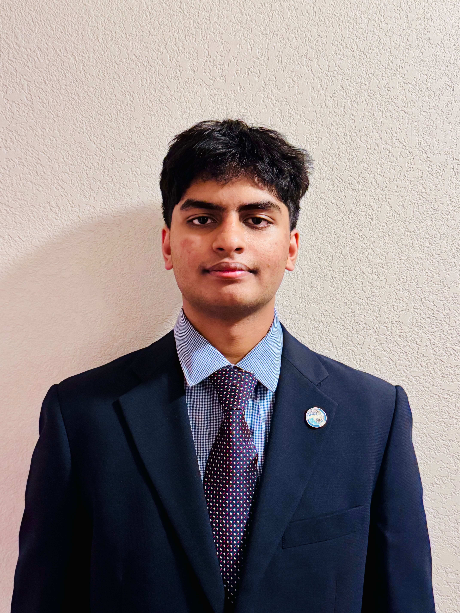

Coursework
12th grade: AP Statistics, AP English Literature, AP Physics C (E&M), AP Microeconomics, AP Government. Also taking Math 207 (Linear Algebra) through the University of North Dakota for undergraduate credit.

I'm a senior at Pacific Collegiate School in Santa Cruz, CA. I build robots, train AI models, and spend a lot of time in science fair season — with some biking, woodworking, and cooking mixed in when I'm not in the lab.
Right now I'm…
Pacific Collegiate School, Santa Cruz, CA — Class of 2027.
12th grade: AP Statistics, AP English Literature, AP Physics C (E&M), AP Microeconomics, AP Government. Also taking Math 207 (Linear Algebra) through the University of North Dakota for undergraduate credit.
SAT: 740 R/W, 720 Math. Weighted GPA 4.1, unweighted 3.83.
Robotics, electronics, coding, and creative writing.
Programs and internships, most recent first.
Completed "Exploring Artificial Intelligence," building foundational literacy in machine learning pipelines, deep learning, and generative AI.
Online internship with a UK-based traffic violation app, working on backend development.
Completed the AI Intensive course for high school students.
Online coursework building a foundation in Java programming.
Science fairs and robotics competitions.
1st place in the Ranger category (2026, Newfoundland & Labrador, Canada) with X Academy Hephaestus Robotics, as VP of ROV Engineering — competing against 47 teams from 15 countries. 3rd place the year before (2025, Michigan).
1st place in Northern California (2026), 2nd place (2025 and 2024) — qualifying for Worlds each year.
Best in Show, Senior Division and ISEF Finalist (2026); 1st place, Computer Science (2025); 1st place, Physics (2024, 2023, 2022) — along with IEEE, Air Force, Navy, and other category awards most years.
First Award of $500 from the Patent and Trademark Office Society (2026); qualified as an Observer (2025).
Distinguished Conrad Innovator Award (2026), as captain/founder of the Fireguard Technology team.
Independent engineering projects, most recent first.
A model prototype robot that can move, sense, and extinguish fire in rough terrain.
Applying deep learning techniques to improve safety in autonomous vehicles.
Combining data from multiple sensors for more reliable readings.
An ultrasonic sensing project exploring alternative ways to detect obstacles.
An early project exploring drone flight and control.
What I do when I'm not building or testing something.
A few of the things that keep me busy outside of school, robotics, and science fairs.
Volunteering, most recent first.
Volunteered at school and community events: state park clean-ups, Ironman event support, school orientation, beach clean-ups, math tutoring, Stuff the Bus, and video recording for school events (2023–2026).
Environmental clean-ups, graffiti removal, native plant restoration, beach clean-ups, and food bank sorting and packaging (2024).
Prepared and cooked nourishing meals for Santa Cruz County families facing cancer and other life-threatening illnesses (2023).
Reach out by email or text.
menonadi4@gmail.com